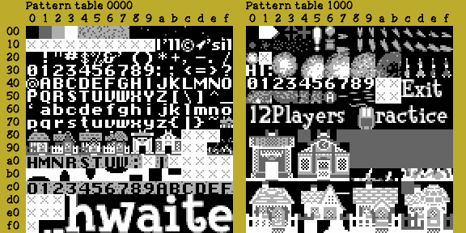

คำถามที่เจอบ่อยที่สุดตอนแปลเกม NES/Famicom เป็นไทย: "ผมเข้าใจว่าแค่เพิ่มพื้นที่ ROM แล้วให้ pointer ชี้ไปที่ใหม่ก็พอ แต่ทำไมเกมยังขึ้น tile ผิด หรือมีที่ไม่พอใส่ฟอนต์ไทย?"
คำตอบสั้น: ความเข้าใจเรื่อง "เพิ่มพื้นที่ ROM แล้วแก้ pointer ให้ชี้ไปที่ใหม่" ถูกต้อง — แต่ใช้ได้กับ "ข้อมูลข้อความ/script" เท่านั้น ส่วน "tile ของ NES/FC" เป็นอีกชั้นหนึ่งที่แยกจากกันโดยสิ้นเชิง นี่คือสาเหตุที่ทำให้ NES/FC ยากกว่า SFC มากในหลายเกม
1. จุดที่มักเข้าใจคลาดเคลื่อน
บน Famicom มี 3 เรื่องที่แยกกันโดยสิ้นเชิง อย่าปนกัน:
| สิ่งที่เพิ่มได้ | เก็บอะไร | ข้อจำกัดหลัก |
|---|---|---|
| PRG-ROM | โค้ด, script, pointer, ข้อมูลเกม | ขยายได้ แต่ต้องรองรับขนาดที่เพิ่มและ bank switching ของ mapper |
| CHR-ROM | รูป tile/font | PPU มองเห็น tile ได้พร้อมกันเพียง 8 KB หรือสูงสุด 512 tile ขนาด 8×8 แบบ 2bpp เท่านั้น ไม่ว่า cartridge จะมี CHR มากแค่ไหน |
| VRAM/PPU | tile ที่กำลังใช้แสดงบนจอจริง | ถูกจำกัดโดยฮาร์ดแวร์ และ tile index บน tilemap มีเพียง 1 byte (อ้างอิงได้ 0–255 ต่อ pattern table) |
PPU ของ NES มี pattern table 2 ชุด ชุดละ 256 tile รวมอ้างอิงได้พร้อมกัน 512 tile ที่ช่วง $0000–$1FFF
และ tile 8×8 หนึ่งชิ้นใช้ 16 ไบต์ในโหมดกราฟิกมาตรฐานของ NES (อ้างอิง: NESdev Wiki)
2. ทำไม Pointer อย่างเดียวจึงไม่พอ
ตัวอย่าง logic ของข้อความบน NES:
Pointer script -> อ่านรหัสตัวอักษร เช่น $41 -> แปลง $41 เป็น tile index -> เขียน tile index ลง nametable -> PPU ดึงรูป tile จาก CHR bank ที่กำลัง active
ถ้าเพิ่ม glyph ไทยไว้ใน CHR bank ใหม่ เช่น bank 3 แต่เกมยังเปิดใช้ CHR bank 0 อยู่:
ข้อความเรียก tile $80 -> PPU ยังหา tile $80 ใน CHR bank 0 -> ได้ภาพผิด หรือเป็น tile ว่าง
กล่าวคือ pointer ข้อความชี้ไปยัง script ได้ แต่ tile index ในข้อความยังอ้างอิงได้เฉพาะ tile ที่ "ถูกโหลด/ถูก bank-switch มาอยู่ใน PPU ตอนนั้น" เท่านั้น
3. สิ่งที่ต้องเช็กเป็นอันดับแรก: Mapper ของ ROM
เปิด ROM ด้วย Mesen หรือ FCEUX Debugger แล้วดู iNES/NES 2.0 header ว่าใช้ mapper หมายเลขอะไร รวมถึงขนาด PRG และ CHR ปัจจุบัน
| Mapper/รูปแบบ | ความเป็นไปได้ในการเพิ่มฟอนต์ไทย |
|---|---|
| NROM / Mapper 0 | ยากที่สุด: ไม่มี bank switching เลย CHR-ROM ที่ใช้ได้มี 8 KB ตายตัวตลอดเกม |
| UxROM / Mapper 2 | สลับ PRG ได้ แต่โดยทั่วไป CHR เป็น RAM หรือขนาดตายตัว ต้องดูเกมจริงเป็นรายเกม |
| CNROM / Mapper 3 | สลับ CHR ได้ทีละ 8 KB ทั้งชุด — ใช้เพิ่มชุดฟอนต์ได้ แต่ทั้งฉาก/สไปรต์อาจเปลี่ยนพร้อมกันหมด |
| MMC1 / Mapper 1 | ยืดหยุ่นขึ้น สลับ PRG/CHR bank ได้ (CHR เป็นชุด 4KB หรือ 8KB) |
| MMC3 / Mapper 4 | เหมาะกับงานนี้มากกว่าเพื่อน เพราะสลับ CHR เป็นธนาคารเล็กระดับ 1 KB/2 KB ได้ (สลับเฉพาะฟอนต์โดยไม่กระทบฉากทั้งหมด) |
| Bandai FCG / Mapper 159 | คล้ายกลุ่ม MMC ทั่วไป สลับ PRG/CHR bank ได้ และมักมี RAM สำรอง — ตรวจ manual ของ mapper นี้ก่อนใช้งานจริง |
| CHR-RAM | เขียน tile เข้า PPU RAM ระหว่างเกมได้ แต่ต้องมี routine upload, จังหวะ VBlank และพื้นที่ PRG สำหรับเก็บฟอนต์ |
NES แสดงข้อมูล tile ได้พร้อมกัน 8 KiB เท่านั้น แม้ cartridge จะเก็บ CHR ได้มากกว่านั้น โดยอาศัย mapper สำหรับสลับ bank (อ้างอิง: NESdev Wiki — CHR ROM vs. CHR RAM)
4. ดู Pattern Table จริงในเกม
นี่คือตัวอย่างจริงจาก Pattern Table Viewer (เครื่องมือในตัว debugger เช่น Mesen/FCEUX) ของเกม NES เกมหนึ่ง แสดง Pattern Table 0000 และ Pattern Table 1000 — รวมกัน 512 tile ขนาด 8×8 คือทั้งหมดที่ PPU "มองเห็น" ได้ในเวลาเดียวกัน

สังเกตว่าฟอนต์ตัวอักษร (แถวบนซ้าย) กับกราฟิกฉาก/เมนู (ฝั่งขวา) อยู่ใน คนละ pattern table ของเกมนี้ — นี่คือสิ่งที่ต้องไปตรวจดูก่อนว่าเกมที่กำลังแปลจัดวางแบบไหน เพราะจะกำหนดว่ามี "ที่ว่าง" ให้ฟอนต์ไทยกี่ tile จริงๆ
5. ถ้า "Tile ไม่พอ" มีทางเลือกอะไรบ้าง
ทางเลือก 1 — แทนที่ tile อังกฤษที่ไม่ใช้
เป็นทางที่ควรตรวจสอบก่อน และปลอดภัยที่สุด เช่น เกมไม่มี lowercase → เอา a-z มาแทนพยัญชนะไทยบางส่วน,
เกมไม่มีอักษร/สัญลักษณ์บางชุดใน dialogue → ยืม tile เหล่านั้นมา, ตัวเลขและเครื่องหมายคงไว้
ต้องค้นหาให้ครบว่า tile นั้นถูกใช้ใน: เมนู, battle UI, ชื่อไอเทม, เครดิต, sprite/ฉาก, หน้าต่าง save/load หรือไม่ — พลาดจุดใดจุดหนึ่งจะทำให้กราฟิกที่อื่นพัง
ทางเลือก 2 — encoding แบบ "ตัวหลัก + ตัวประกอบ"
อย่าสร้าง tile สำเร็จรูปทุกแบบ เช่น ก่, ก้, ก๊, ก๋, กิ่ เพราะ tile จะหมดเร็วมาก
ให้เก็บข้อความเป็น ก + สระอิ + ไม้เอก แล้วให้ engine วาด ก ที่ตำแหน่งปกติ สระอิซ้อนด้านบน ไม้เอกซ้อนสูงขึ้นอีกระดับ
ข้อดีคือใช้ tile น้อยกว่ามาก แต่ต้องแก้ text renderer ให้ไม่เลื่อน cursor เมื่อเจอสระ/วรรณยุกต์ และจัดการกรณีสระบนชนวรรณยุกต์ · สำหรับ NES วิธีนี้ทำได้ แต่ต้องมีพื้นที่ในกล่องข้อความอย่างน้อย 2–3 แถว tile เพื่อวาง mark บน/ล่าง
ทางเลือก 3 — ฟอนต์แบบ "ครึ่งความกว้าง"
ถ้า engine รองรับการเขียน tilemap แบบกำหนดตำแหน่งเอง อาจออกแบบตัวไทย 8×8 ให้แคบ หรือใช้ 8×16 สำหรับพยัญชนะบางกลุ่ม — ข้อควรระวัง: อ่านยากหากบีบมากเกินไป และเกมจำนวนมากเขียนข้อความทีละ tile จึงอาจต้องแก้ routine เยอะ
ทางเลือก 4 — สลับ CHR bank เฉพาะตอนวาดข้อความ
เหมาะเมื่อเกมใช้ mapper ที่สลับ CHR ได้ เช่น MMC1/MMC3:
ก่อนเปิดกล่องข้อความ -> สลับ CHR bank ของ font อังกฤษเป็น font ไทย ระหว่างอยู่ในกล่องข้อความ -> ใช้ tile ไทย ปิดกล่องข้อความ -> สลับกลับไป CHR bank ของฉาก/เมนูเดิม
ต้องระวัง: ถ้า font กับ background/sprite อยู่ CHR bank เดียวกัน การสลับอาจทำให้ฉากหรือ sprite เพี้ยน · Mapper ที่สลับ CHR ทีละ 8 KB อย่าง CNROM จะจำกัดกว่า เพราะสลับครั้งเดียวอาจเปลี่ยน graphics ทุกส่วนบนจอพร้อมกัน
ทางเลือก 5 — เปลี่ยนจาก CHR-ROM เป็น CHR-RAM
ทางที่ทรงพลังที่สุด แต่เป็นงานระดับ "แก้ engine": ย้ายฟอนต์ไปเก็บใน PRG-ROM → ทำ routine คัดลอก tile จาก PRG-ROM เข้า CHR-RAM ผ่าน PPU → โหลดเฉพาะ glyph ไทยที่จำเป็นก่อนเปิด dialogue หรือระหว่าง VBlank → จัด cache ว่า tile ช่องใดใน CHR-RAM ใช้กับ glyph ไหน
6. กรณี Mapper 0: มีข้อจำกัดจริง
ถ้าเกมเป็น Mapper 0 (NROM) และมี CHR-ROM 8 KB:
- เพิ่ม PRG/CHR แล้วหวังให้เกมเข้าถึงเพิ่มไม่ได้โดยตรง
- ไม่มีคำสั่ง bank switch ให้เรียกเลย
- พื้นที่ tile ที่เห็นได้ตลอดเกมถูกล็อกไว้ที่ 8 KB
- ทางเลือกจริงคือแทนที่ tile เดิม, ลดจำนวน glyph, หรือยกเครื่องเป็น CHR-RAM/mapper ใหม่ ซึ่งแทบเท่ากับ port engine
Mapper 0 ที่ไม่มีการสลับ CHR จะถูกจำกัดอยู่กับ CHR 8 KB ชุดเดียวตลอดโปรแกรม
7. ลำดับการแก้ปัญหาที่แนะนำ
- ระบุ mapper และ PRG/CHR size จาก header ก่อน
- เปิด PPU Pattern Table Viewer ดูว่า font อยู่ช่วง
$0000–$0FFFหรือ$1000–$1FFF - เปิด dialogue, menu, battle และฉากต่างๆ เพื่อดูว่า tile ชุดไหนเปลี่ยนตามหน้าจอ
- สร้างรายการ tile อังกฤษ/สัญลักษณ์ที่ใช้จริงทั้งหมด
- หา tile ที่แทนที่ได้โดยไม่ทำ graphics อื่นเสีย
- ทำฟอนต์ไทยขั้นต่ำก่อน เช่น พยัญชนะที่ใช้บ่อย + สระ + วรรณยุกต์ + ตัวเลข
- เปลี่ยนคำสั้นๆ 1 ประโยค และตรวจว่ามี tile เพี้ยนในทุกฉากหรือไม่
- หาก tile ไม่พอจริง ให้ตรวจว่า mapper รองรับ CHR bank switching หรือไม่
- ค่อยตัดสินใจว่าจะทำ dynamic CHR bank, composite Thai renderer, หรือ CHR-RAM engine
ยังไม่แน่ใจว่าเกม NES/FC ที่กำลังทำเหมาะกับการลงทุนแค่ไหน? ดูตาราง "เลือกเครื่อง/เลือกเกม" และแบบทดสอบ Feasibility ที่ หน้าเลือกเครื่อง/เลือกเกม